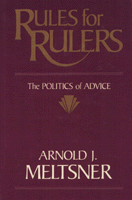

A witty, modern-day Machiavelli offers advice to government and corporate leaders on the human pitfalls of seeking and using advice
A witty, modern-day Machiavelli offers advice to government and corporate leaders on the human pitfalls of seeking and using advice


 A witty, modern-day Machiavelli offers advice to government and corporate leaders on the human pitfalls of seeking and using advice
A witty, modern-day Machiavelli offers advice to government and corporate leaders on the human pitfalls of seeking and using advice

|  |
Rules for RulersThe Politics of AdviceArnold J. Meltsnercloth EAN: 978-0-87722-685-7 (ISBN: 0-87722-685-7) |
"This book makes for enjoyable reading. In an Age of Consultancy, the subject-matter is of widespread professional interest. Advice-taking and advice-giving are comprehensively and charmingly covered by Meltsner. The use of the theatrical play as the organizing principle for the analysis goes well with the other age we are experiencing, the Age of the Image [e.g. Ronald Reagan). The behavioral generalizations in the analysis are empirically valid and will be appreciated by the most experienced of the advisers in the business."
—Ralph M. Goldman, San Francisco State
In this witty and contemporaneous essay, Arnold J. Meltsner, as a modern-day Machiavelli, offers advice to government and corporate leaders on the human pitfalls of seeking, evaluating, and using advice. Drawing examples mainly from the Oval Office and recent history, he examines the factors that affect decision making and proposes rules to help rulers maintain vigilance over their advisers and remain sensitive to the politics of personal influence and persuasion.
Meltsner sees the advisory situation as dramatic, so he uses the metaphor of a play with four key scenes to describe the psychological and social context. Presenting numerous situations that arise during these scenes, Meltsner extrapolates about a half-dozen rules from each scene in this play. Specific, practical advice shapes his commentary: for example, "Keep the inner circle small ... Be careful about revealing your own preferences ... Recognize partial views including your own ... Avoid public protest resignations."
In addition to the ruler-adviser relationship, the author discusses secrecy and leaks, the structure within which rulers make decisions, and the various ways of calibrating advice. Using sometimes humorous and sometimes painful examples, Meltsner demonstrates that rulers� reactions to advice are often based on such factors as expertise, trust, prior performance, predilections, and consensus.
"Rulers should temper their notion of the loyal adviser as an extension of themselves and not assume that they and their advisers are one." Local and national leaders, military generals, industrial managers, and CEOs rulers of all kinds can surely benefit from this advice.
Arnold J. Meltsner is Professor of Public Policy Emeritus at the Graduate School of Public Policy, University of California, Berkeley.
General Interest
Political Science and Public Policy
© 2015 Temple University. All Rights Reserved. This page: http://www.temple.edu/tempress/titles/709_reg.html.